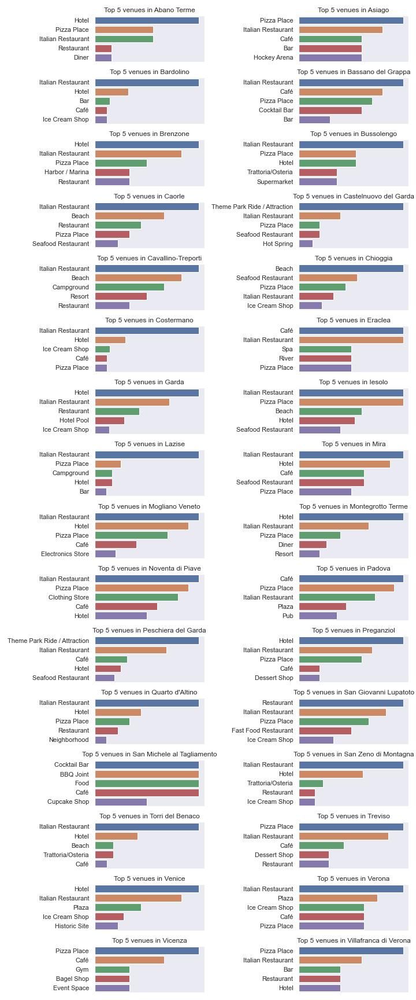
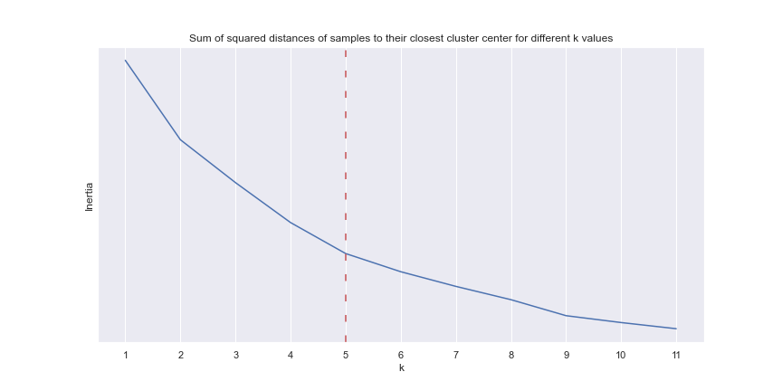

1. Introduction ¶
In this project we will cluster cities located in the proximity of DOCG areas in the Veneto regions, in Italy. In order to do so, we will first need to get familiar with some of the key concepts.
We will start with a brief introduction to italian wine classification and Veneto, and then we will dive in how we will be tackling this project.
A. Italian wine classification ¶
Wine is produced in every region of Italy, which is home to some of the oldest wine-producing areas in the world. Italy is the world's largest producer of wine, with an area of 702,000 hectares under vineyard cultivation.
In 1963, the first official Italian system of classification of wines was launched. Since then, several modifications and additions to the legislation have been made. The last modification established four basic wine categories. The categories, from the bottom to the top level, are:
- Vino da Tavola: generic wines that are made either mostly from one kind of authorized 'international' grape variety or entirely from two or more of them.
- Vini IGT: wines produced in a specific territory within Italy. These need following a series of specific and precise regulations on authorized varieties, viticultural and vinification practices, labeling instructions, etc.
- Vini DOP: This category includes two sub-categories:
- Vini DOC: DOC wines generally come from smaller regions that are particularly vocated for their climatic and geological characteristics, quality, and originality of local winemaking traditions.
- Vini DOCG: In addition to fulfilling the requisites for DOC wines, DOCG wines must pass stricter analyses prior to commercialization. They must also demonstrate a superior commercial success.
DOCG wines are the top level wines produced in Italy, therefore the areas where they are produced are generally popular touristic destinations.
B. Veneto ¶
Veneto is a gem of a region in the northeast corner of Italy. Bound on the west by Lake Garda, on the north by the Dolomite Mountains and on the east by the Adriatic Sea, the landscape of the Veneto is rich and varied. From the grandeur of crumbly old Venice to the medieval flavor of Bassano del Grappa, and on to Belluno, a striking town that's a gateway for visiting the Dolomites, the Veneto makes a fascinating region to explore.
Veneto is one of the leading Italian regions in terms of quantity and quality production of grapes. The wines produced in this region are famous throughout the world: Prosecco, Amarone, Recioto, Soave, Valpolicella and Bardolino, are only a few of the names of wines known at international level.
Veneto is also the region that can count the highest number of DOCG areas in Italy.
C. Our objective¶
Now that we are familiar with DOCG areas and the Veneto region we can define our objective.
There are many beautiful cities located within or in proximity of DOCG areas. These cities offer the most different kind of activities, venues and places of interest. If a person is interested in visiting the DOCG vineyards and stay in a city nearby, it would be great if they were able to choose a destination based on their preferred type of activities. That is the purpose of our project.
2. Data ¶
The data used in this project has been made freely available by the Veneto region through it geoportal. There we can download the datasets and prepare them for our analysis.
A. DOCG geographical areas ¶
The geographical information regading DOCG appellations area is contained in an SHP file.
A SHP (shapefile) is a simple, nontopological format for storing the geometric location and attribute
information of geographic features. Geographic features in a shapefile can be represented by points,
lines, or polygons (areas). In Python, in order to access the shapefile we can use the
pyshp
library. We then need to convert the file to geojson format in order to utilise it with
folium for our maps plotting.
After having created the dataset we can see the first 5 rows:
| appellation | code | zone | coords | |
|---|---|---|---|---|
| 0 | RECIOTO SOAVE CLASSICO | A021 | A | [(11.252029507865142, 45.41758433331832), (11.... |
| 1 | RECIOTO SOAVE | A021 | X | [(11.207064614961942, 45.4507371295929), (11.2... |
| 2 | BARDOLINO SUPERIORE CLASSICO | A025 | A | [(10.794778650134427, 45.518760038125784), (10... |
| 3 | BARDOLINO SUPERIORE | A025 | X | [(10.843049258063267, 45.43160165449561), (10.... |
| 4 | SOAVE SUPERIORE CLASSICO | A026 | A | [(11.252029507865142, 45.41758433331832), (11.... |
There are four features:
- appellation: the name of the DOCG
- code: the area code
- zone: the zone type
- coords: a list of latitude and longitude coordinates
And here is the data plotted on a map.
IFrame('maps/docgs.html', width=1000, height=450)
B. Veneto municipalities geographical areas ¶
We managed to get ahold another SHP file containing the georaphical coordinates of every
municipality in the Veneto region. After doing the same process as the previous shapefile we have
stored
the information in both a DataFrame and a geojson file.
This is how the data looks:
| Comune | Prov | CODISTAT | NOMCOM | PROVINCIA | AREA | PERIMETER | ID1 | coords | |
|---|---|---|---|---|---|---|---|---|---|
| 0 | 29033 | 29 | 29033 | Occhiobello | RO | 3.251909e+07 | 28900.15864 | 527 | [(11.574961743249316, 44.95070722627497), (11.... |
| 1 | 29025 | 29 | 29025 | Gaiba | RO | 1.206460e+07 | 18468.00608 | 526 | [(11.479809311494138, 44.97789519756071), (11.... |
| 2 | 29009 | 29 | 29009 | Canaro | RO | 3.266567e+07 | 33974.60289 | 525 | [(11.661722276937734, 44.97455175786645), (11.... |
| 3 | 29021 | 29 | 29021 | Ficarolo | RO | 1.796072e+07 | 21152.56640 | 524 | [(11.440782497382445, 44.98232147591316), (11.... |
| 4 | 29045 | 29 | 29045 | Stienta | RO | 2.408899e+07 | 24452.03201 | 523 | [(11.559372185120054, 44.98162314511416), (11.... |
We do not need to focus on any of the fields here besides NOMCOM, which is the name of the municipality, and the coords that we will need for plotting.
This is how the data looks on a map.
IFrame('maps/comunes.html', width=1000, height=500)
This dataset will then be filtered to include only the cities relevant to our study.
C. Touristic cities ¶
The data stored in a csv file contains information on the amount of tourists visiting each of Veneto's comunes in a given year. The data was collected from 2003 to 2013. Here we can see the last 5 rows:
| year | comune | province | n_tourists | |
|---|---|---|---|---|
| 5572 | 2013 | Taglio di Po | ROVIGO | 4819.0 |
| 5573 | 2013 | Trecenta | ROVIGO | 482.0 |
| 5574 | 2013 | Villadose | ROVIGO | 584.0 |
| 5575 | 2013 | Villamarzana | ROVIGO | NaN |
| 5576 | 2013 | Porto Viro | ROVIGO | 2566.0 |
It contains information about:
- year: the relevant year
- comune: the name of the municipality
- province: the name of the province
- n_tourists: the number of tourists that have visited the comune that given year
We selected the first 32 cities in proximity of DOCG areas by total number of tourists for our analysis. With the help of the Nominatim geolocator we managed to find the latitude and longitude coordinates of all city centers. The first five rows of our final dataset look like this:
| latitude | longitude | |
|---|---|---|
| comune | ||
| Abano Terme | 45.360314 | 11.789783 |
| Asiago | 45.875377 | 11.510700 |
| Bardolino | 45.547559 | 10.724215 |
| Bassano del Grappa | 45.766911 | 11.734347 |
| Brenzone | 45.707599 | 10.765873 |
Here is are the cities pinned on the map of the DOCG areas.
IFrame('maps/selected_cities.html', width=1000, height=450)
D. Foursquare API ¶
We used the Foursquare API in order to find venues and places of interest in each of the locations.
After leveraging the platform our final result is a dataset containg info about venues within these municipalities. A radius of 5km from each location was used in the search. We can have a look at some sample data .
| city | city_lat | city_lon | venue | venue_lat | venue_lon | category | |
|---|---|---|---|---|---|---|---|
| 0 | Abano Terme | 45.360314 | 11.789783 | L'ombra Che Conta | 45.361623 | 11.790219 | Trattoria/Osteria |
| 1 | Abano Terme | 45.360314 | 11.789783 | Abano Grand Hotel | 45.354321 | 11.785206 | Hotel |
| 2 | Abano Terme | 45.360314 | 11.789783 | Panoramic Hotel Plaza | 45.354413 | 11.783820 | Hotel |
| 3 | Abano Terme | 45.360314 | 11.789783 | Grand Hotel Trieste & Victoria | 45.352713 | 11.781310 | Hotel |
| 4 | Abano Terme | 45.360314 | 11.789783 | Parco Urbano Termale | 45.351798 | 11.783535 | Park |
The information conatined stores information about:
- city: the municipality
- city_lat: the latitude of the municipality
- city_lon: the longitude of the municipality
- venue: the venue name
- venue_lat: the latitude of the venue
- venue_lon: the longitude of the venue
- category: the category of the venue
Our query returned a total of 1925 venues in the areas of interest. We can the first five rows of the table containing the total number of venues found for each category.
| venues | |
|---|---|
| category | |
| Accessories Store | 2 |
| Agriturismo | 3 |
| American Restaurant | 7 |
| Argentinian Restaurant | 1 |
| Art Gallery | 3 |
After all the datasets are acquired we are now ready to start the analysis.
3. Methodology¶
This section represents the main component of our analysis. As a reminder our purpose is to recommend cities based on some common activities that can be done in those particular locations. As always we start with some exploratory data analysis. In particular, our first question is to see whether these municipalities have venue categories in common.
We can plot the top 5 categories for each of the comunes.

It is definetly showing some similarities. In particular we can see that some areas have a more maritime kind of venue or activity, there are also some areas close to a major amusement park. We can see that food venues are also very popular in all of this locations.
We again need to perform some transformations to our data so that we are able to cluster the municipalities. We will approach the clustering problem by implementing the k-means algorithm. k-means is a distance-based method that iteratively updates the location of k cluster centroids until convergence. The main user-defined "ingredients" of the k-means algorithm are the distance function (often Euclidean distance) and the number of clusters k. This parameter needs to be set according to the application or problem domain.
In a nutshell, k-means groups the data by minimizing the sum of squared distances between the data points and their respective closest centroid. It is particulary used in problems involving spatial data.
In Python we can use the KMeans class from scikit-learn. We analysed the inertias for
different values of k and picked 5 as our hyperparameter. Here we can see a plot of inertia
values for different values of k.

After fitting our model we are then able to apply the clusters to the municipalities. Following are the first five rows of the municipalities with their assigned cluster.
| city | cluster | |
|---|---|---|
| 8 | Abano Terme | 2 |
| 29 | Asiago | 0 |
| 9 | Bardolino | 3 |
| 26 | Bassano del Grappa | 0 |
| 24 | Brenzone | 2 |
This concludes the methodology section. In the next section we will be checking our results.
4. Results ¶
All of our cities are now clustered into different groups. In order to recommend some particual group to a person wanting to visit the DOCG areas we will need to distinguish what the different clusters are and what are the discriminants that differentiate the classes.
As a first step we can visualize the different clusters.
IFrame('maps/cities_clustered.html', width=1000, height=550)
Our next step is to analyse what the discriminants are and how the clusters were chosen. Here is a normalized table with the percentage of category of venue for each cluster.
| cluster | Accessories Store | Agriturismo | American Restaurant | Argentinian Restaurant | Art Gallery | Art Museum | ... |
|---|---|---|---|---|---|---|---|
| 1 | 0.012241 | 0.011494 | 0.021419 | 0.01 | 0.01 | 0.01 | ... |
| 2 | NaN | 0.018353 | 0.018353 | NaN | NaN | NaN | ... |
| 3 | NaN | NaN | 0.012937 | NaN | 0.02 | 0.01 | ... |
| 4 | NaN | NaN | NaN | NaN | NaN | NaN | ... |
| 5 | NaN | NaN | NaN | NaN | NaN | NaN | ... |
With some further analysis we can differentiate the different clusters into 5 categories:
-
Cluster 1:
This cluster contains the following cities: Asiago, Bassano del Grappa, Bussolengo, Eraclea, Iesolo, Mira, Mogliano Veneto, Noventa di Piave, Padova, San Giovanni Lupatoto, San Michele al Tagliamento, Treviso, Verona, Vicenza and Villafranca di Verona. It includes spas, river walks and cocktail bars. -
Cluster 2
This cluster includes the cities of Castelnuovo del Garda and Peschiera del Garda. These locations are situated in the proximity of an amusement park. -
Cluster 3:
Venice, Abano Terme, Brenzone, Garda, Montegrotto Terme and Preganziol form our third cluster. This cluster offers plenty of hotels, a mixuture of gastonomic venues as well as some spas. -
Cluster 4:
Is almost entirely made up of the towns in proximity of lake Garda. Bardolino, Costermano, Lazise, Quarto d'Altino, San Zeno di Montagna and Torri del Benaco form this cluster. The majority of the venues are food and wine related. -
Cluster 5:
This includes the maritime areas situated on the gulf of Venice and offers beaches, seafood restaurants and resorts. These municipalities included are Caorle, Cavallino-Treporti and Chioggia.
5. Discussion ¶
From what we have concluded in our results section we can propose different destinations based on the type of activities a person visiting the DOCG areas would like to do.
If the person is looking for a relaxing style of holiday our go to pick would be amongst cities in Cluster 1. If we were to travel with our family for example, we could pick a town in Cluster 2. For a more traditional city holiday we could choose between the cities in Cluster 3. For a gastronomic and wine tour any of the cities in CLuster 4 would be ideal. Last but not least if we are looking for a beach style of holiday we would pick any of the municipalities in Cluster 5.
| Cluster | Cities forming the cluster | Best suited for |
|---|---|---|
| 1 | Asiago, Bassano del Grappa, Bussolengo, Eraclea, Iesolo, Mira, Mogliano Veneto, Noventa di Piave, Padova, San Giovanni Lupatoto, San Michele al Tagliamento, Treviso, Verona, Vicenza, Villafranca di Verona | Relaxational destinations |
| 2 | Castelnuovo del Garda, Peschiera del Garda | Family destinations |
| 3 | Venice, Abano Terme, Brenzone, Garda, Montegrotto Terme, Preganziol | City experience |
| 4 | Bardolino, Costermano, Lazise, Quarto d'Altino, San Zeno di Montagna, Torri del Benaco | Gastronomical tour |
| 5 | Caorle, Cavallino-Treporti, Chioggia | Beach destination |
It is important to know that this classification is limited to the information retreived through the Foursquare API. The amount of venues taken into consideration is only a fraction of the actual amount.
6. Conclusion ¶
This section concludes our exploration of cities located in proximity of DOCG areas and our project.
We are now able to recommend locations based on selected type of activities. It is now up to you to decide what kind of holidays you would enjoy and deep in those wonderful areas made of outstanding wines and food.
The code and all the assets can be found at this link. The repo includes all the files used in this project, you can reproduce the problem and find some insights yourself.
If you have any questions do not esitate to contact me for further discussionor, even if you simply liked this project .
Hope you enjoyed this journey in the land of wines.